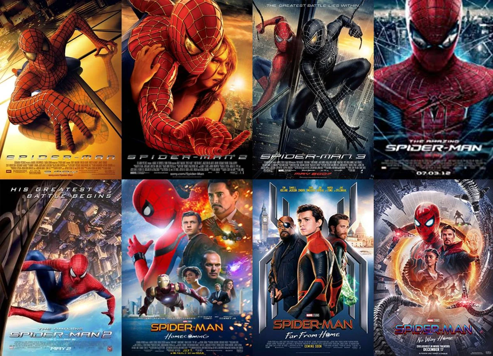
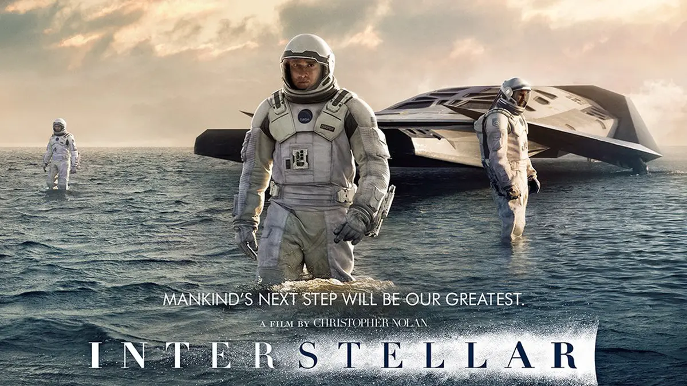

Blog
Harry Potter

"Harry Potter" adalah sebuah seri novel fantasi yang ditulis oleh penulis Inggris, J.K. Rowling.
Cerita ini mengisahkan tentang petualangan seorang anak yatim piatu bernama Harry Potter, yang pada usia sebelas tahun mengetahui bahwa ia adalah seorang penyihir.
Harry kemudian diterima di Sekolah Sihir Hogwarts, di mana ia belajar tentang sihir, bertemu teman-teman baru, dan menghadapi berbagai tantangan, termasuk melawan penyihir jahat bernama Lord Voldemort.
Selama perjalanan hidupnya di Hogwarts, Harry menemukan kekuatan persahabatan, keberanian, dan cinta yang memungkinkannya untuk menghadapi takdirnya sebagai "The Chosen One" yang akan mengalahkan Voldemort.
Seri ini terdiri dari tujuh buku yang masing-masing menggambarkan tahun-tahun Harry di Hogwarts dan pertarungan antara kebaikan dan kejahatan dalam dunia sihir.
Spider-man

"Spider-Man" adalah salah satu karakter pahlawan super paling ikonik dari Marvel Comics. Kisahnya berkisar pada Peter Parker, seorang remaja yang mendapat kekuatan super setelah digigit oleh laba-laba yang telah dimodifikasi secara genetik. Dengan kekuatan super itu, Peter memutuskan untuk menggunakan kemampuannya untuk melindungi New York City dari penjahat dan kejahatan.
Seri "Spider-Man" mencakup berbagai media, termasuk komik, film, serial televisi, dan permainan video. Di dalamnya, kita melihat petualangan Peter Parker sebagai Spider-Man, menghadapi musuh-musuh seperti Green Goblin, Doctor Octopus, Venom, dan banyak lagi.
Selain perjuangan fisik melawan penjahat, cerita Spider-Man juga sering kali menyoroti konflik internal Peter Parker, termasuk tanggung jawabnya sebagai pahlawan super, kesulitannya dalam menjaga identitas rahasianya, dan perjuangannya dalam menjalin hubungan dengan orang-orang terdekatnya.
Secara keseluruhan, seri Spider-Man menawarkan kombinasi aksi, petualangan, dan elemen dramatis yang telah menarik penggemar selama puluhan tahun.
Interstellar

"Interstellar" adalah film fiksi ilmiah epik yang disutradarai oleh Christopher Nolan. Film ini mengikuti perjalanan seorang mantan pilot NASA, Cooper, yang bersama dengan sekelompok peneliti berangkat ke luar angkasa dalam misi menyelamatkan umat manusia yang terancam kelaparan di Bumi yang tandus.
Cerita film ini mengeksplorasi konsep-konsep fisika teoretis seperti lubang cacing dan relativitas waktu saat para penjelajah mencoba menemukan planet yang dapat menjadi tempat hunian baru bagi umat manusia. Sementara itu, di Bumi, anak perempuan Cooper, Murph, berusaha memecahkan teka-teki fisika yang mungkin menyelamatkan umat manusia.
"Interstellar" bukan hanya tentang petualangan luar angkasa, tetapi juga tentang hubungan antara seorang ayah dan anaknya, serta tentang daya tahan dan keberanian manusia di hadapan tantangan yang tampaknya mustahil.
Dengan efek visual yang memukau, skor musik yang mengesankan, dan cerita yang mendalam, "Interstellar" telah menjadi salah satu film fiksi ilmiah yang paling dihargai dan dibicarakan dalam beberapa tahun terakhir.